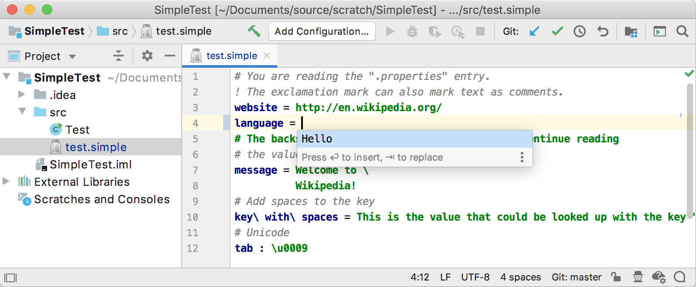

9. Completion Contributor
Custom languages provide code completion using one of two approaches. The Simple Language plugin implements the less complex of the two methods, reference completion.
9.1. Define a Completion Contributor
For this tutorial, the simple_language_plugin provides custom completion for values in Simple Language property files.
Create a completion contributor by subclassing CompletionContributor.
This rudimentary completion contributor always adds “Hello” to the results set, regardless of context:
// Copyright 2000-2020 JetBrains s.r.o. and other contributors. Use of this source code is governed by the Apache 2.0 license that can be found in the LICENSE file.
package org.intellij.sdk.language;
import com.intellij.codeInsight.completion.*;
import com.intellij.codeInsight.lookup.LookupElementBuilder;
import com.intellij.patterns.PlatformPatterns;
import com.intellij.util.ProcessingContext;
import org.intellij.sdk.language.psi.SimpleTypes;
import org.jetbrains.annotations.NotNull;
public class SimpleCompletionContributor extends CompletionContributor {
public SimpleCompletionContributor() {
extend( CompletionType.BASIC,
PlatformPatterns.psiElement(SimpleTypes.VALUE).withLanguage(SimpleLanguage.INSTANCE),
new CompletionProvider<CompletionParameters>() {
public void addCompletions(@NotNull CompletionParameters parameters,
@NotNull ProcessingContext context,
@NotNull CompletionResultSet resultSet) {
resultSet.addElement(LookupElementBuilder.create("Hello"));
}
}
);
}
}
9.2. Register the Completion Contributor
The SimpleCompletionContributor implementation is registered in the plugin configuration file with the IntelliJ Platform using the com.intellij.completion.contributor extension point.
<extensions defaultExtensionNs="com.intellij">
<completion.contributor language="Simple"
implementationClass="org.intellij.sdk.language.SimpleCompletionContributor"/>
</extensions>
9.3. Run the Project
Run the simple_language_plugin in a Development Instance and open the test.simple file.
Erase the property “English” and invoke Basic Code Completion.
The choice “Hello” is shown:
